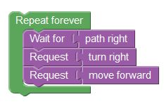

In this level we have seen two new blocks,Request and Wait for.
Using request you can request events.
Using Wait for you can wait for events.
The first scenario is responsible for handling a right turn. The scenario waits for the event, 'path right' and then requests to 'turn right' and 'move forward'. All of these are achieved using Request and Wait-for.

The second scenario is responsible for moving the pegman forward.
The scenario constantly requests to 'move forward' using Request.

Let's continue to the next level!